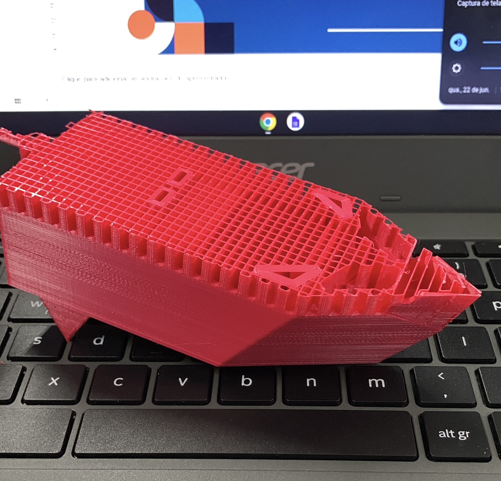

Pesquisando sobre projetos de máquinas térmicas, encontramos diversos experimentos envolvendo a termodinâmica e acabamos optando por fazer um barquinho movido a vapor. Para fazer o barquinho, utilizamos a plataforma Tinkercad e a impressora 3D da escola.
Tivemos alguns problemas, como a quebra de peças do barco, mas nada que atrapalhasse muito o desempenho dele, então continuamos com o mesmo.
Quando a latinha de alumínio, que funciona como uma pequena caldeira, é aquecida pela chama da vela, ocorre uma transferência de calor para a água que está no interior da caldeira, ela atinge mais de 100 ˚C e acaba formando vapor que obriga a água a sair pelos canudos e o barco move-se para frente.
Quando se consome a água que estava na caldeira, o barco deveria parar, mas quando a água e o vapor saem da caldeira, parte do vapor restante se condensa e se contrai nos canudos, os quais estão mais frios.
Essa contração diminui a pressão, o que faz com que a água fria seja aspirada para dentro dos tubos, fazendo com que haja uma força resultante, recomeçando o ciclo.